100BC
The Antikythera mechanism, an ancient Greek analogue astronomical computer and orrery used to predict astronomical positions and eclipses for calendar and astrological purposes.
The Antikythera mechanism, an ancient Greek analogue astronomical computer and orrery used to predict astronomical positions and eclipses for calendar and astrological purposes.
Muḥammad ibn Mūsā al-Khwārizmī publishes "On the Calculation with Hindu Numerals", translated into latin as "Algoritmi de numero Indorum", with Al-Khwārizmī name rendered as Algoritmi, leding to the term "algorithm".
The Banū Mūsā brothers publishes the "Book of Ingenious Devices on automata (automatic machines) and mechanical devices". The book described about one hundred devices and how to use them.
Su Song completes the 40-foot-tall water-powered astronomical clocktower constructed in Kaifeng, China.
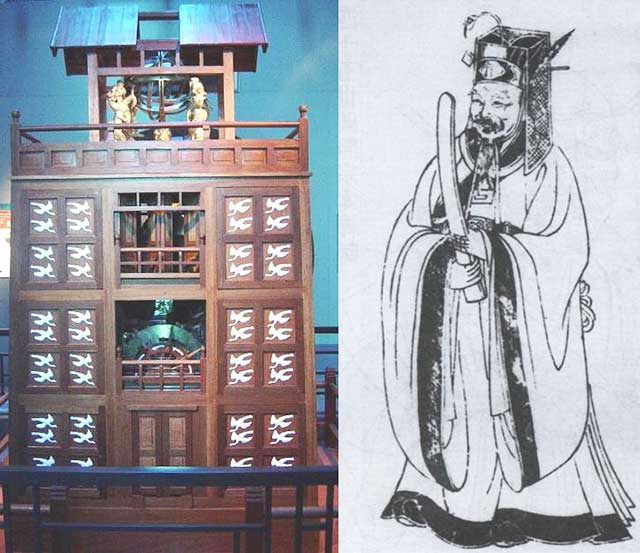Ismail al-Jazari makes the Castle clock, which is considered to be the first programmable analog computer.
Pascaline, Blaise Pascal's arithmetic machine primarily intended as an adding machine which could add and subtract two numbers directly, as well as multiply and divide by repetition.
Stepped Reckoner, Gottfried Wilhelm Leibniz's mechanical calculator that could add, subtract, multiply, and divide. Leibniz may have been the first computer scientist and information theorist, documenting the binary numeral system (base 2).
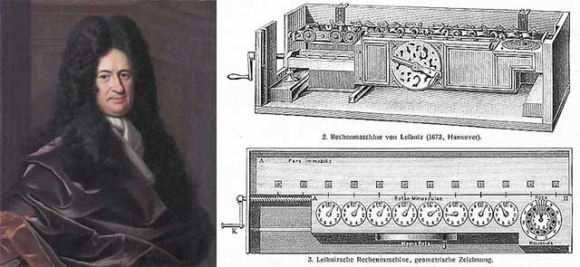Joseph Marie Jacquard invents the Jacquard machine (or loom), that simplifies the process of manufacturing textiles with such complex patterns as brocade, damask and matelassé, using punch cards to program the looms patterns.
Charles Xavier Thomas de Colmar patents the Arithmometer, the first reliable digital mechanical calculator (manufactured from 1851).
Charles Babbage (1791-1871) makes the Difference engine, a mechanical device to calculate polynomials.
Charles Babbage originates the concept of a digital programmable computer, with his Analytical Engine.
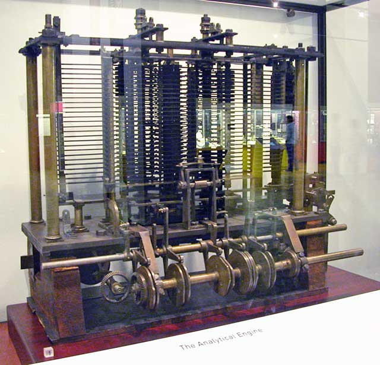Ada Lovelace (1815-1852), created the first algorithm (to be run in Babbage Analytical Engine), becoming the first computer programmer.
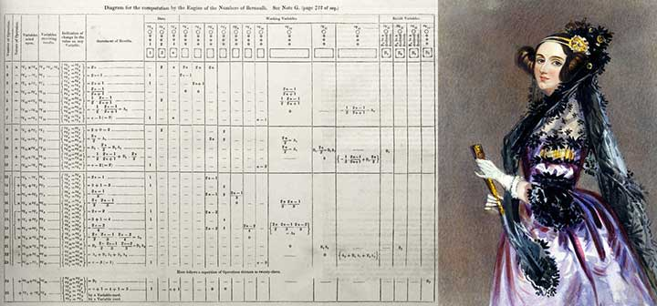George Boole working in the fields of differential equations and algebraic logic, publishes "The Laws of Thought", which contains Boolean algebra.
Herman Hollerith gets a patent for a punched card data processing equipment, and starts The Hollerith Electric Tabulating System (a precurser to IBM). The system gets used in the US 1890 Census.
William Thomson used the Ball-and-disk integrator in his Harmonic Analyser to measure tide heights by calculating coefficients of a Fourier series.
The updated Marchant Calculator invented, the most advanced of the mechanical calculators, by Rodney and Alfred Marchant. The key design was by Carl Friden.
Fredrik Rosing Bull presents his vertical punchcard sorting machine, The Bull machine (patented in 1919), improving Hollerith's system and breaking IBMs monopoly on (rented) punch card readers.
Konrad Zuse presents the Z3, the world's first working programmable, fully automatic digital computer, an improvement over the Z2 (1939), and the mechanical computer Z1 (1936-38) that was the first to use Boolean logic and binary floating point numbers.
Jorge Luis Borges publishes ”The Garden of Forking Paths”, describing infinite, non-linear text.

UK starts the Colossus computer program.
I think there is a world market for maybe five computers.
-Thomas Watson, IBM President
IBM funds the Harvard Mark I.
Memex, a concept by Vannevar Bush with a microfilm-based desk to access all books, magazines, newspapers instantly is described in the article "As We May Think".
First Draft of a Report on the EDVAC, by John von Neumann (based in part on Turings work).
Alan Turing (1912-1954), releases paper describing Automatic Computing Engine. The release was deleayed because much of his work was classified by British governmet during the war.
ENIAC, the first fully-operational electronic general-purpose computer that was put into service at the University of Pennsylvania, with 6 women as the programmers, the "Refrigerator Ladies": Kay McNulty, Betty Jennings, Betty Snyder, Marlyn Wescoff, Fran Bilas and Ruth Lichterman.
Bell Telephone Laboratories invents the transistor.
Claude E. Shannon publishes the article "A Mathematical Theory of Communication".
NUSSE, the first electronic computer in Norway, completed at Sentralinstituttet for Industriell Forskning in Oslo.
John Bardeen, Walter Brattain, and William Shockley wins the Nobel prize "for their researches on semiconductors and their discovery of the transistor effect", ie. the invention of the transistor in 1947.
Russia launches Sputnik, first human built satellite.
USA establishes Defense Advanced Research Projects Agency (DARPA), originally known as Advanced Research Projects Agency (ARPA), as a direct response to the launch of Sputnik.
Joseph Carl Robnett Licklider (at APRA) publishes the paper "Man-Computer Symbiosis", something of Lickliders' vision for a complementary (symbiotic) relationship between humans and computers at a potential time of the future.
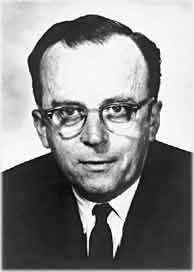Project Xanadu, a hypertext project proposed as a new kind of writing, with "parallel pages, visibly connected", founded by Ted Nelson. The Curse of Xanadu @ Wired
Douglas Engelbart started Augmentation Research Center (ARC) at the Stanford Research Institute (SRI).
Leonard Kleinrock published his first paper on queueing theory in digital networks, "Information Flow in Large Communication Nets".
J.C.R. Licklider and Welden Clark published the paper "On-Line Man-Computer Communication" which was one of the first descriptions of a networked future.
Ted Nelson coined the term "hypertext".
Paul Baran publishes the article "On Distributed communications", describing one of the first store-and-forward data layer switching protocols, a link-state/distance vector routing protocol, and an unproved connection-oriented transport protocol.
Bill English, then chief engineer at the ARC, built the first prototype of a computer mouse from Douglas Engelbart's design.
Donald Davies at National Physical Laboratory (NPL) invents packet switching (independently of Baran), a method of grouping data transmitted over a digital network into packets which are composed of a header and a payload. Packet switching is the primary basis for data communications in computer networks worldwide.
Lawrence Roberts and Thomas Marill get an ARPA contract to create the first wide-area network (WAN) connection via long distant dial-up between a TX-2 computer in Massachusetts and a Q-32 computer in California. The system confirms that packet switching offers the most promising model for communication between computers.
Bob Taylor convinced ARPA's Director Charles M. Herzfeld to fund a network project, ARPANET.
Star Trek by Gene Roddenberry debuts on NBC in the US. The show tells the tale of the crew of the starship Enterprise and its five-year mission "to boldly go where no man has gone before." The technology envisioned in the show has inspired scientists, engineers and inventors ever since.
Robert W. Taylor (at ARPA, later Xerox PARC) and J.C.R. Licklider publishes the paper "The Computer as a Communication Device". The article starts with the prediction that "In a few years, men will be able to communicate more effectively through a machine than face to face."
The Mother of all Demos by Douglas Engelbart. The 90-minute presentation essentially demonstrated almost all the fundamental elements of modern personal computing: windows, hypertext, graphics, efficient navigation and command input, video conferencing, the computer mouse, word processing, dynamic file linking, revision control, and a collaborative real-time editor (collaborative work).
The Internet is born: DARPA launches the ARPANET, created to be robust enough to be able to withstand a nuclear attack, by not having one central machine; ie. a distributed network, initially with 4 nodes (or IMPs):
The first successful message on the ARPANET was sent by UCLA student programmer Charley Kline, at 10:30 pm on 29 October 1969.
Xerox PARC established, the R&D company has been in large part responsible for such developments as laser printing, Ethernet, the modern personal computer, graphical user interface (GUI) and desktop paradigm, object-oriented programming, ubiquitous computing, amorphous silicon (a-Si) applications, and advancing very-large-scale integration (VLSI) for semiconductors.
Ray Tomlinson implements the first email program on the ARPANET system, using the @ to separate the user name from the name of their machine.
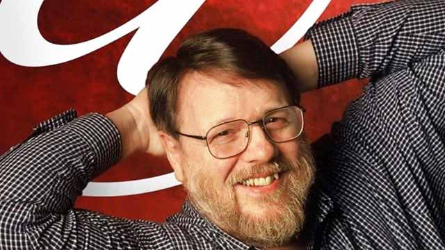Abhay Bhushan publishes RFC 114 with the original specification for the File Transfer Protocol (FTP).
The Xerox Alto is the first computer designed from its inception to support an operating system based on a graphical user interface (GUI), later using the desktop metaphor.
Norwegian Seismic Array, NORSAR at Kjeller, Norway becomes the first ARPANET node outside the USA.
Bob Kahn and Vint Cerf starts working on TCP/IP, a protocol suite that provides end-to-end data communication, by specifying how data should be packetized, addressed, transmitted, routed, and received.
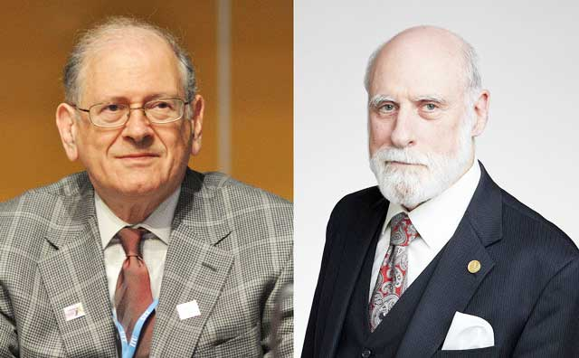Altair 8800, first affordable microcomputer, features on the front page of the January 1975 issue of "Popular Electronics".
There is no reason anyone would want a computer in their home.
-Ken Olsen, founder of Digital Equipment Corporation
Apple II, first highly successful mass-produced microcomputer.
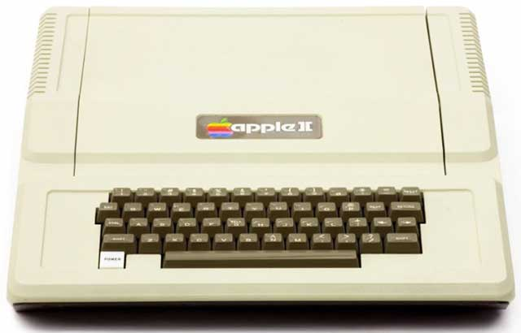A three-network TCP/IP test was conducted between sites in the US, the UK, and Norway
Tim Berners-Lee works as an independent contractor at CERN from June to December. While in Geneva, he proposed a project based on the concept of hypertext, to facilitate sharing and updating information among researchers. To demonstrate it, he built a prototype system named ENQUIRE.
IBM 5150, the first IBM Personal Computer with DOS 1.0 by Microsoft, progenitor of the IBM PC compatible hardware platform.
640K ought to be enough for anybody.
-Bill Gates, CEO Microsoft (possibly misattributed)
Sinclair ZX Spectrum, (one of) the first mass market computer released.
Commodore 64 released (after being introduced in January), outselling the IBM PC compatibles, Apple Inc. computers, and the Atari 8-bit family of computers, it dominated the low-end computer market for most of the 1980s. It is listed in the Guinness World Records as the highest-selling single computer model of all time.
TCP/IP permanently activated, ARPANET changed from NCP to the TCP/IP protocol suite.
NoteCards, a hypertext-based personal knowledge base system, created at Xerox PARC by Randall Trigg, Frank Halasz and Thomas Moran.
Paul V. Mockapetris proposes the Domain Name System (DNS) architecture.
Apple Macintosh, first mass market computer with Graphic User Interface (GUI) and mouse, inspired by the 1973 Xerox Alto. The Macintosh was introduced by a US$1.5 million Ridley Scott television commercial, "1984", airing during the third quarter of Super Bowl XVIII on January 22, 1984.
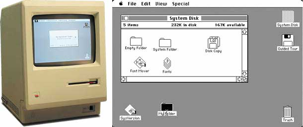Tim Berners-Lee re-joins CERN as a fellow.
William Gibson, author of "Neuromancer," is the first to use the term "cyberspace".
Commodore Amiga 1000, with advanced graphics and sound systems, released.
Steve Jobs fired from Apple, goes on to fund NeXT (1985), a computer company; and Pixar (1986), an animation studio based on a spinoff from Lucasfilm.

HyperCard for Apple Macintosh, with programmable user interface, using the Hypertalk programming language.
NeXT Computer System, with version 0.8 of its Unix-based NeXTSTEP operating system, was shown with the launch of the NeXT Computer.
Van Jacobson and Michael J. Karels publishes "Congestion Avoidance and Control", originating many of the congestion avoidance algorithms used in TCP/IP.
Internet Assigned Numbers Authority, IANA, founded to oversee global IP address allocation, autonomous system number allocation, root zone management in the Domain Name System (DNS), media types, and other Internet Protocol-related symbols and Internet numbers.
Tim Berners-Lee initiates World Wide Web project and the HyperText Transfer Protocol.
The World becomes the first commercial Internet service provider (ISP), available to the general public and businesses.
Robert Cailliau joins Tim Berners-Lee on the WWW project.
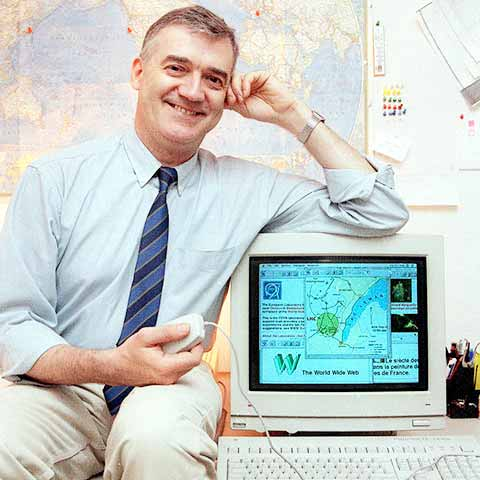IMDb (the Internet Movie Database) began as a movie database on the Usenet group "rec.arts.movies". Moved to the web in 1993.
CERN httpd launched on a NeXT cube, the world's first web server.
WorldWideWeb, the first web browser and HTML editor launches (later renamed Nexus).
First (public) web page launched!
ViolaWWW is a discontinued browser by Pei-Yuan Wei, who was inspired by Apple HyperCard. It was first released in 1991/1992 for Unix, and included advanced features such as embedded graphics, scripting, and animation. For a time it acted as the recommended browser at CERN.
Erweis, a discontinued pioneering web browser, and the first commonly available with a graphical user interface, is first released.
Lynx, a customizable text-based web browser, is announced to Usenet. It's the oldest web browser still in development (July 2017).
Neil Papworth sends the first ever text message (SMS) to Richard Jarvis at Vodafone wishing him a "Merry Christmas".
MacWWW, also known as Samba, the first browser for Mac OS (System 6 and 7) and the first for any non-Unix operating system, initially released. Created by Robert Cailliau and Nicola Pellow at CERN. It was a commercial product from CERN and cost 50 European Currency Units (not to be confused with Euros).
Mosaic v. 0.1a is released, by Marc Andreessen at National Center for Supercomputing Applications (NSCA), the ancestor of all modern browsers, and the first killer application that popularized the Internet. It was ported from Unix to Windows, Mac OS and Amiga OS in September/October 1993.
Cello is released, by Thomas R. Bruce, as the first web browser for Windows.
Myst launched, a puzzle game with an interactive storybook using HyperCard.
Tim Berners-Lee founds W3C, the World Wide Web Consortium.
CSS, Cascading Style Sheets, was first proposed by Håkon Wium Lie. At the time, Lie was working with Tim Berners-Lee at CERN.
Netscape Navigator is released, also by Marc Andreessen, based directly on Mosaic (though totally re-written).
Opera, browser initially by Telenor, then Opera Software, demonstrated at Third International WWW Conference. Early mobile adopters (1998), but has never surpassed 2% market share.
Amazon.com founded by Jeff Bezos, goes online as a bookstore.
Internet Explorer, launched alongside Windows 95 by Microsoft. IE won the "The First Browser War" in the late 1990s.
eBay is founded as AuctionWeb by Pierre Omidyar.

JavaScript (originally named LiveScript), released with Netscape 2.0.
Craigslist classified advertisements website, by Craig Newmark, goes online.
Netscape submitted JavaScript to Ecma International to make a standard specification.
The Dancing Baby, also called "Baby Cha-Cha," became a media phenomenon and one of the first viral videos in the second half of the 1990s, after web developer John Woodell created and published a highly compressed animated gif.

CSS level 1, developed by Håkon Wium Lie and Bert Bos, published
Apple buys NeXT and Steve Jobs returns to Apple.
The Yandex.ru search engine was launched on September 23, 1997, by Comptek, and was publicly presented at the Softool exhibition in Moscow.
Sally Floyd and Vern Paxson publishes the paper "Why We Don't Know How to Simulate the Internet", re-published as "Difficulties in Simulating the Internet" in 2001.
Apple launches the iMac (with 'i' for Internet), designed by Jonathan Ive.

Google search page launched, by Larry Page and Sergey Brin.
The Internet Corporation for Assigned Names and Numbers, ICANN, is created.
Paypal online payments system launched as Confinity, joins with Elon Musk's X.com in 2000.
The Box Acid Test (Acid1) launched, establishing baseline interoperability between early web browsers, especially for CSS 1.0.
Alibaba Online launched in China by Jack Ma. Its online sales and profits surpassed all US retailers (including Walmart, Amazon and eBay) combined since 2015.
Napster, the pioneering peer-to-peer (P2P) file sharing Internet service that emphasized sharing mp3 music files released. (Forced to shut down in 2001, and P2P migrated to the BitTorrent model and others.)
Baidu web services company founded in China.
Wikipedia, the free online encyclopedia initiated by Jimmy Wales, launched.
Apple releases the first iPod, a portable music player.
Safari, browser created by Apple based on the open sourced Webkit layout engine, is released.
LinkedIn is launched as a social networking website focused on professional networking, including employers posting jobs and job seekers posting their CVs. Acquired by Microsoft as of December 2016.
Wordpress, a free and open-source content management system (CMS) and blogging tool, is released.
Myspace is founded as a social networking website offering an interactive, user-submitted network of friends, personal profiles, blogs, groups, photos, music, and videos. From 2005 to 2008, Myspace was the largest social networking site in the world.
Facebook launches as "TheFacebook" to students of Harvard College (later expanded to other Ivy League colleges, before opened to everyone on September 26, 2006).
Gmail, a free email service developed by Google, beta release. The beta/testing period lasted until 2009-07-07.
Firefox, browser launched by Mozilla Foundation as a "Phoenix" on the ashes of Netscape (after a very long beta period).

Church of the Flying Spaghetti Monster goes viral, after being initiated by Bobby Henderson's letter of protest to the Kansas State Board of Education, about the decision to permit teaching intelligent design as an alternative to evolution in public school science classes.
Youtube video sharing service founded.
The Acid2 test launched, to expose web page rendering flaws in web browsers and other applications that render HTML.

Reddit social news aggregation, web content rating, and discussion website launched.
Google launches its free online office suite, with Google Docs, a word processor; Google Sheets, a spreadsheet program; and Google Slides, a presentation program.
Twitter microblogging, news and social networking service is created.
Netflix expands its business with the introduction of streaming media service Watch Now.
Apple introduces the iPhone.
Dropbox cloud storage founded.
GitHub web-based version control repository launches.
The Acid3 test launched, for a web browser's compliance with elements of various web standards, particularly the Document Object Model (DOM) and JavaScript.
Google Chrome browser released, initially based on Webkit, but since v.28 based on Blink, a fork of Webkit.

Google introduces the Android mobile operating system (bought in 2005 from Android Inc.), with the HTC Dream smartphone, also known as T-Mobile G1.
DuckDuckGo search engine launched. DuckDuckGo distinguishes itself from other search engines by not profiling its users and by showing all users the same search results for a given search term.
The first ever Bitcoin mined, a block of 50 coins. Bitcoin was invented by an unknown person or group of people under the name Satoshi Nakamoto and released as open-source software in 2009.
Apple introduces the iPad.
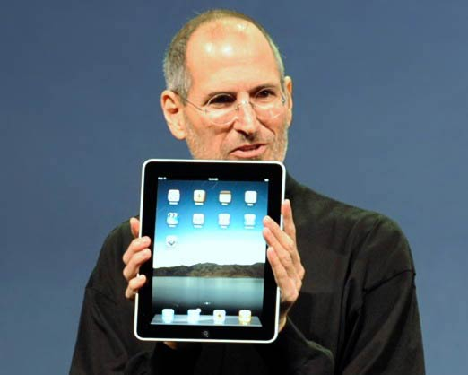Instagram photo sharing service released. Aquired by Facebook in April 2012.
Facebook reaches one billion monthly active users.
Slack, a cloud-based set of team collaboration tools and services, founded by Stewart Butterfield, is released.
HTML5 Standard Initial release
Microsoft Edge launched, replacing Internet Explorer as the default web browser on all Microsofts platforms.
The Observer (The Guardian), The New York Times and Channel 4 News breaks the Facebook – Cambridge Analytica data scandal. It was revealed that Cambridge Analytica had harvested the personal data of millions of people's Facebook profiles without their consent and used it for political advertising purposes. The information originated from a whistle-blower, the ex-Cambridge Analytica employee Christopher Wylie
The General Data Protection Regulation, GDPR, EU Regulation 2016/679, a regulation in EU law on data protection and privacy for all individuals within the European Union (EU) and the European Economic Area (EEA), is implemented.
Sources: Mostly Wikipedia. All dates (from 1583 and onwards) are according to ISO 8601. Geek.no.